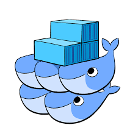

### Srodowiska i narzedzia wytwarzania oprogramowania - wyklad 9  Docker Swarm = (rozproszony) klaster silnikow Dockera, nazywanych wezlami, na ktorych sa uruchomione zadania zwiazne z okreslonymi uslugami --- #### Cechy Docker Swarm - zarzadzanie klastrem zintegrowane z Docker Engine w wersji 1.12 lub pozniejszej - tworzenie klastra, uruchamianie uslug i zarzadzanie cala infrastruktura poprzez CLI - dynamiczne przydzielanie zadan wezlom a nie podczas konfiguracji danego wezla - za pomoca silnika Docker mozna uruchamiac wezly robocze (workers) oraz wezly zarzadzajace (managers) - role sa przydzielane wezlom w czasie rzeczywistym dzieki czemu caly klaster mozna zbudowac korzystajac z jednego kontenera bazowego - deklaratywny opis zadanego stanu klastra --- #### Cechy Docker Swarm - skalowanie = dla kazdej uslugi mozna okreslic ilosc uruchomionych na klastrze powiazanych zadan - podczas skalowania manager automatycznie dodaje lub usuwa zadania aby uzyskac zadany stan klastra - uzgadnianie stanu klastra - manager klastra w trybie ciaglym monitoruje stan klastra i w razie potrzeby wprowadza zmiany aby doprowadzic do zadanego stanu - polaczenie sieciowe pomiedzy wezlami = siec nakladkowa z automatycznie przydzielanymi adresami - odszukiwanie uslug = manager klastra przypisuje kazdej usludze unikalna nazwe DNS i dba o rownomierne obciazenie wezlow - bezpieczenstwo polaczen = kazdy wezel klastra wymusza wzajemne uwierzytelnianie oraz szyfrowanie TLS --- #### Elementy klastra Docker Swarm - wezel = instancja silnika Dockera pracujacego w trybie klastra (swarm mode) - na jednym hoscie moze byc uruchomiony jeden badz kilka wezlow klastra Docker Swarm, ale typowo architektura ta jest realizowana w ramach wielu roznych hostow (fizycznych badz wirtualnych) - glowny wezel zarzadzajacy (manager node) = przypisuje zadania do poszczegolnych wezlow roboczych - wezly zarzadzajace 'wybieraja' (za pomoca algorytmu Raft) pomiedzy soba lidera tzn. glowny wezel zarzadzajacy, ktory steruje cala infrastruktura klastra - Docker zaleca nieparzysta ilosc wezlow zarzadzajacych <= 7 - Klaster skladajacy sie z `N` managerow jest odporny na awarie co najwyzej (N-1)/2 managerow --- #### Elementy klastra Docker Swarm - wezel roboczy = instancja silnika Dockera, ktorej jedynym zadaniem jest uruchamianie kontenerow - wezly robocze wykonuja zadania zlecone przez managera - domyslnie wezly zarzadzajace sluza takze jako wezly robocze, ale mozliwa jest taka konfiguracja klastra w ktorej ich jedynym zadaniem jest zarzadzanie infrastruktura - wezly robocze informuja managera o aktualnie wykonywanych zadaniach, tak ze manager moze w razie potrzeby zmodyfikowac stan wezla roboczego - role wezlow sa dynamiczne! wezel zarzadzajacy mozna zmienic na roboczy i vice versa --- #### Elementy klastra Docker Swarm <img src="./swarm-diagram.png" width="800"> --- #### Uslugi w klastrze Docker Swarm - usluga = zadania, ktore maja byc wykonane na wezlach roboczych, np. realizacja serwera HTTP, bazy danych,... - aby zdefiniowac usluge trzeba okreslic jaki obraz bazowy kontenera ma byc uzyty i jakie polecenia wewnatrz konetenera maja byc wykonane - mozna okreslic w ktorej sieci nakladowej ma pracowac usluga oraz jakie zasoby CPU i pamieci sa dostepne dla tej uslugi - zwielokrotnione uslugi = manager klastra uruchamia kilka identycznych zadan w roznych wezlach klastra; liczba tych identycznych zadan zalezy od zadeklarowanej na poczatku skali - usluga globalna = manager uruchamia to samo zadanie na wszystkich dostepnych wezlach --- #### Uslugi zwielokrotnione i globalne <img src="./replicated-vs-global.png" width="600"> --- #### Uslugi w klastrze Docker Swarm <img src="./services-diagram.png" width="600"> - jesli ktores zadanie nie zdaje testow sprawnosci (health checks) albo ulega awarii, manager klastra usuwa to zadanie i uruchamia nowy kontener z nowa kopia uslugi --- #### Cykl zycia uslugi w klastrze Docker Swarm <img src="./service-lifecycle.png" width="650"> --- #### Udostepnianie uslug poza klaster - manager klastra automatycznie przypisuje usludze port (PublishedPort) z zakresu 30000-32767 za pomoca ktorego mozna sie polaczyc z usluga; mozliwe jest takze reczne ustawienie dowolnego nieuzywanego portu - rownomierne obciazenie polaczen zewnetrznych (ingress load balancing) = zewnetrzne skladniki infrastruktury moga laczyc sie z usugami poprzez PublishedPort na dowolnym wezle, bez wzgledu na to, czy usluga jest uruchomiona na tym wezle czy nie - wszystkie wezly w klastrze Docker Swarm trasuja przychodzace polaczenia do wezla na ktorym uruchomiona jest dana usluga - rownomierne obciazenie wezlow wewnatrz klastra (internal load balancing) jest realizowane przy uzyciu uslugi DNS wbudowanej w klaster --- #### Tworzenie najprostszego klastra Docker Swarm - inicjalizacja silnikow Dockera w trybie klastra (swarm mode) - dodawanie wezlow do klastra - uruchamianie uslugi na klastrze - zarzadzanie klastrem po uruchomieniu --- #### Tworzenie najprostszego klastra Docker Swarm - trzy maszyny wirtualne manager1, worker1, worker2 - silnik Docker v1.12 lub nowszy zainstalowany na wszystkich hostach - wszystkie wezly moga sie laczyc z managerem; manager ma staly adres IP np. 192.168.99.100 - otwarte porty na wszystkich hostach - TCP port 2377, komunikaty zarzadzajace klastrem - TCP/UDP port 7946, komunikacja pomiedzy wezlami - TCP/UDP port 4789, komunikacja sieci nakladkowej --- #### Tworzenie najprostszego klastra Docker Swarm ```bash $ docker swarm init --advertise-addr 192.168.99.100 Swarm initialized: current node (dxn1zf6l61qsb1josjja83ngz) is now a manager. To add a worker to this swarm, run the following command: docker swarm join \ --token \ SWMTKN-1-49nj1cmql0jkz5s954yi3oex3nedyz014ie39trti4wxv-8vxv8rssmk743ojnwacrr2e7c \ 192.168.99.100:2377 To add a manager to this swarm, run 'docker swarm join-token manager' and follow the instructions. ``` - flaga `--advertise-addr` konfiguruje rozglaszanie adresu biezacego wezla (192.168.99.100) jako adresu managera klastra --- #### Konfiguracja managera Docker Swarm - wyswietlanie obecnego stanu klastra ```bash $ docker info Containers: 2 Running: 0 Paused: 0 Stopped: 2 ...snip... Swarm: active NodeID: dxn1zf6l61qsb1josjja83ngz Is Manager: true Managers: 1 Nodes: 1 ...snip... ``` - wyswietlanie informacji o wezlach klastra ```bash $ docker node ls ID HOSTNAME STATUS AVAILABILITY MANAGER STATUS dxn1zf6l61qsb1josjja83ngz * manager1 Ready Active Leader ``` - flaga `*` obok `ID` wezla oznacza ze jestesmy podlaczeni do danego wezla --- #### Dodanie wezlow roboczych do Docker Swarm ```bash $ docker swarm join-token worker To add a worker to this swarm, run the following command: docker swarm join \ --token \ SWMTKN-1-49nj1cmql0jkz5s954yi3oex3nedyz014ie39trti4wxv-8vxv8rssmk743ojnwacrr2e7c \ 192.168.99.100:2377 ``` ```bash $ docker swarm join \ --token \ SWMTKN-1-49nj1cmql0jkz5s954yi3oex3nedyz014ie39trti4wxv-8vxv8rssmk743ojnwacrr2e7c \ 192.168.99.100:2377 This node joined a swarm as a worker. ``` - wyswietlanie informacji o wezlach klastra ```bash $ docker node ls ID HOSTNAME STATUS AVAILABILITY MANAGER STATUS 03g1y59jwfg7cf99w4lt0f662 worker2 Ready Active 9j68exjopxe7wfl6yuxml7a7j worker1 Ready Active dxn1zf6l61qsb1josjja83ngz * manager1 Ready Active Leader ``` --- #### Uruchomienie uslugi na klastrze ```bash $ docker service create --replicas 1 --name helloworld alpine ping docker.com 9uk4639qpg7npwf3fn2aasksr ``` - flaga `--name` nadaje nazwe `helloworld` uruchomionej usludze - flaga `--replicas` deklaruje ilosc kopii uruchomionej uslugi - argument `alpine ping docker.com` wskazuje uzycie kontenera bazujacego na Alpine Linux, w ktorym wykonywane jest polecenie `ping docker.com` ```bash docker service ls ID NAME SCALE IMAGE COMMAND 9uk4639qpg7n helloworld 1/1 alpine ping docker.com ``` --- #### Uzyskanie informacji o usludze ```bash $ docker service inspect --pretty helloworld ID: 9uk4639qpg7npwf3fn2aasksr Name: helloworld Mode: REPLICATED Replicas: 1 Placement: UpdateConfig: Parallelism: 1 ContainerSpec: Image: alpine Args: ping docker.com ``` ```bash $ docker service inspect helloworld [ { "ID": "9uk4639qpg7npwf3fn2aasksr", "Version": { "Index": 418 }, "CreatedAt": "2016-06-16T21:57:11.622222327Z", "UpdatedAt": "2016-06-16T21:57:11.622222327Z", "Spec": { "Name": "helloworld", ... ``` --- #### Uzyskanie informacji o usludze - informacja na wezle zarzadzajacym `manager1` ```bash $ docker service ps helloworld ID NAME SERVICE IMAGE LAST STATE \ DESIRED STATE NODE 8p1vev3fq5zm0mi8g0as41w35 helloworld.1 helloworld alpine Running 3 minutes \ Running worker2 ``` - informacja na wezle roboczym `worker2` ```bash $ docker ps CONTAINER ID IMAGE COMMAND CREATED STATUS \ PORTS NAMES e609dde94e47 alpine:latest "ping docker.com" 3 minutes ago Up 3 minutes \ helloworld.1.8p1vev3fq5zm0mi8g0as41w35 ``` --- #### Skalowanie uslugi ```bash $ docker service scale helloworld=5 helloworld scaled to 5 ``` - informacja o uslugach na klastrze ```bash $ docker service ps helloworld ID NAME SERVICE IMAGE LAST STATE DESIRED STATE NODE 8p1... helloworld.1 helloworld alpine Running 7m Running worker2 c7a... helloworld.2 helloworld alpine Running 24s Running worker1 6cr... helloworld.3 helloworld alpine Running 24s Running worker1 auk... helloworld.4 helloworld alpine Running 24s Accepted manager1 ba1... helloworld.5 helloworld alpine Running 24s Running worker2 ``` - informacja o usludze na wezle `manager1` ```bash $ docker ps CONTAINER ID IMAGE COMMAND CREATED \ STATUS PORTS NAMES 528d68040f95 alpine:latest "ping docker.com" About a minute ago \ Up About a minute helloworld.4.auky6trawmdlcne8ad8phb0f1 ``` --- #### Usuwanie uslugi ```bash $ docker service rm helloworld helloworld ``` ```bash $ docker service inspect helloworld [] Error: no such service: helloworld ``` ```bash $ docker ps CONTAINER ID IMAGE COMMAND CREATED STATUS PORTS ``` --- #### Podstawowe polecenia (CLI) do zarzadzania klastrem Docker Swarm - swarm init - swarm join - service create - service inspect - service ls - service rm - service scale - service ps - service update --- #### Siatkowe trasowanie polaczen przychodzacych do Docker Swarm - wszystkie wezly klastra uczestnicza w trasowaniu - siatkowe trasowanie umozliwia akceptowanie przez kazdy wezel polaczen przychodzacych na port powiazany z usluga uruchomiona w klastrze nawet jesli na tym wezle nie jest uruchomiona ta usluga - siatkowe trasowanie wymaga otwartych portow `7946 TCP/UDP` oraz `4789 UDP` - publikowanie portu zwiazanego z dana usluga `<PUBLISHED-PORT>:<TARGET-PORT>`, np. port 80 w kontenerze `nginx` jest powiazany z portem `8080` na kazdym wezle klastra ```bash $ docker service create --name my-web --publish 8080:80 --replicas 2 nginx ``` - publikowanie portu dzialajacej uslugi ```bash $ docker service update --publish-add <PUBLISHED-PORT>:<TARGET-PORT> <SERVICE> ``` --- #### Siatkowe trasowanie polaczen przychodzacych do Docker Swarm <img src="./ingress-routing-mesh.png" width="750"> - sprawdzenie portow przypisanych do uslugi ```bash $ docker service inspect --format="" my-web [{"Protocol":"tcp","TargetPort":80,"PublishedPort":8080}] ``` --- #### Przypisanie protokolow do publikowanych portow - tylko `TCP` ```bash $ docker service create --name dns-cache -p 53:53 dns-cache $ docker service create --name dns-cache -p 53:53/tcp dns-cache ``` - `TCP` oraz `UDP` ```bash $ docker service create --name dns-cache -p 53:53/tcp -p 53:53/udp dns-cache ``` - tylko `UDP` ```bash $ docker service create --name dns-cache -p 53:53/udp dns-cache ``` --- #### Konfiguracja zewnetrznego managera rownomiernego obciazenia - konfiguracja `HAProxy` do rownomiernego rozlozenia zapytan skierowanych do uslugi `nginx` opublikowanej na porcie `8080` <img src="./ingress-lb.png" width="650"> --- #### Konfiguracja zewnetrznego managera rownomiernego obciazenia - mozliwa jest konfiguracja `HAProxy`, tak ze obciazone sa wezly, na ktorych nie jest uruchomiona usluga `nginx` ```bash cat /etc/haproxy/haproxy.cfg global log /dev/log local0 log /dev/log local1 notice ...snip... # Configure HAProxy to listen on port 80 frontend http_front bind *:80 stats uri /haproxy?stats default_backend http_back # Configure HAProxy to route requests to swarm nodes on port 8080 backend http_back balance roundrobin server node1 192.168.99.100:8080 check server node2 192.168.99.101:8080 check server node3 192.168.99.102:8080 check ```